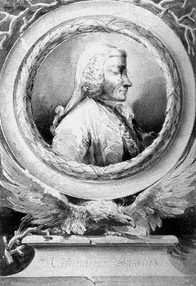

La strada per Menfi e Tebe passa da Torino
– così scrive Jean-Francois Champollion, mentre si affida alle collezioni egizie di Torino per decifrare la scrittura geroglifica.
1630: L’Egitto arriva a Torino
Il primo reperto della collezione egizia di Torino è la Mensa Isiaca: si tratta in realtà di una tavola di epoca romana, in cui i motivi egizi sono puramente decorativi.
Nel 1757 la Mensa Isiaca desta l’interesse di Carlo Emanuele III di Savoia, che chiede al botanico Vitaliano Donati di portare dalla sua spedizione in Oriente alcuni manufatti.
Vitaliano Donati Botanico per professione, è famoso per i suoi scritti di storia naturale e geologia. Partì per l’Oriente per osservare nuove tecniche di coltivazione e allevamento, ma tornò a Torino con molti reperti che sarebbero poi andati a comporre la prima collezione del Museo Egizio.
Non esiste ancora un Museo Egizio, ma a Torino come in tutta Europa si sta diffondendo il piacere della riscoperta dei classici e la volontà di "capire" le culture del passato. Di lì a poco questa nuova corrente culturale avrebbe ricevuto un impulso inaspettato, grazie alle mire grandiose di un ufficiale dell’esercito francese.
1798: La campagna d’Egitto

Tra le fila dell’esercito napoleonico in Egitto prestano servizio 150 tra studiosi e letterati: il loro incarico è raccogliere reperti e manufatti in grado di placare la sete di conoscenza che sta pervadendo l’Europa.
Nel 1815 Napoleone viene sconfitto a Waterloo ed esiliato. L’Europa ridisegna i propri confini e il Piemonte ritorna ai Savoia.
Nella vecchia-nuova Europa i tumulti politici non sembrano avere alcun impatto sulla diffusione della cultura egizia.
I reperti antichi circolano rapidamente e con estrema facilità tra l’Egitto e l’Europa, grazie anche agli accordi tra i defraudatori di tombe e gli agenti delle autorità diplomatiche, che si spartiscono i ritrovamenti per venderli al miglior offerente.
1824: L’affaire Drovetti
Nel 1824 Drovetti vende a Carlo Felice di Savoia una collezione di 5.268 oggetti tra cui 100 statue, 170 papiri, varie stele, sarcofagi, mummie e oggetti della vita quotidiana: reperti che ha raccolto con metodi spregiudicati nei territori di Tebe. Per 400.000 lire – una fortuna, all’epoca – tutto viene unito alla Collezione Donati destinata al Museo Egizio.

Bernardino Drovetti Nato in Piemonte, è colonnello dell’esercito francese durante la Campagna d’Egitto. Nonostante i cambiamenti geopolitici rimane Console d’Egitto anche dopo la caduta di Napoleone.
Il prezzo della Collezione Drovetti Nel 1824, un manovale guadagnava circa 2 lire al giorno e un chilo di pane costava 35-40 centesimi. Con la somma ricevuta dal re per i reperti venduti, Drovetti avrebbe potuto garantirsi i servizi di 7 servitori per 100 anni.
Rimane solo un nodo da sciogliere: trovare il palazzo in grado di ospitare statue alte 5 metri e papiri lunghi 29.
Nella Torino ottocentesca c’è solo un edificio adatto a tale impresa: Palazzo Accademia delle Scienze, un ex collegio per nobili nel cuore di Torino, a pochi passi da quello che diventerà il primo parlamento d’Italia.
1831: apre il Museo Egizio di Torino

Le porte del Museo Egizio si aprono al pubblico: Torino diventa uno dei più importanti poli della cultura egizia in Europa.
Quello che fa del Museo Egizio di Torino un museo all’avanguardia, sin dalla sua apertura, è l’enorme quantità di manufatti che documentano le attività quotidiane: una selezione straordinaria in un’epoca in cui i musei tendevano a privilegiare la resa artistica dei manufatti.
1894: L’epopea Schiaparelli
Ernesto Schiaparelli è il nuovo direttore alla guida del Museo Egizio: il suo nome resterà per sempre legato a quello di questa grande istituzione.
Ernesto Schiaparelli È uno dei più grandi egittologi italiani, presidente della Missione Archeologica Italiana in Egitto. A lui si devono importanti scoperte, come la Tomba di Nefertari nel 1904 e quella di Kha nel 1906.
Schiaparelli sa che le collezioni a Torino, provenendo per la maggior parte da uno stesso sito, possono restituire solo un’istantanea parziale della cultura egizia.
Nei 30 anni alla guida del Museo Egizio, si propone quindi di completare il ritratto di quella che è stata una delle culture antiche più avanzate della storia, partendo in prima persona alla ricerca dei tasselli mancanti.
Nel corso dell’era Schiaparelli vengono salvati dall’oblio delle sabbie e arrivano a Torino ben 18.000 oggetti, provenienti da Giza, Asmunein, Heliopolis, Qaw el Kabir, deir el Medina, la Valle della Regine a Tebe, Hammamiya, dei el Medina, Assiut, Gebelein e Assuan.
I nuovi reperti sono così tanti e di tale importanza da rendere necessario il primo di una lunga serie di ampliamenti dello spazio espositivo.
Il Museo Egizio si trasforma, per diventare memoria di un intero popolo.